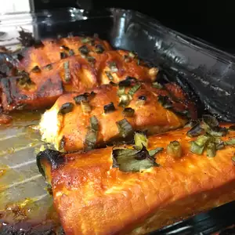

Odin Recipes
Ying-Yang Salmon

This is the best salmon recipe ever! It is awesome!
- Prep: 10 mins
- Cook: 30 mins
- Additional: 30 mins
- Total: 1 hr 10 mins
- Servings: 6
- Yield: 6 Servings
Ingredients
- 1/2 cup hot red pepper sauce
- 1/2 cup brown sugar, or to taste
- 2 tablespoons butter
- 1 tablespoon honey
- 2 tablespoons fresh lemon juice
- 1 tablespoon olive oil
- 1 (2 pound) boneless salmon fillet
- 1/4 cup chopped green onions
- 1 pinch salt
- 1 pinch freshly ground black pepper